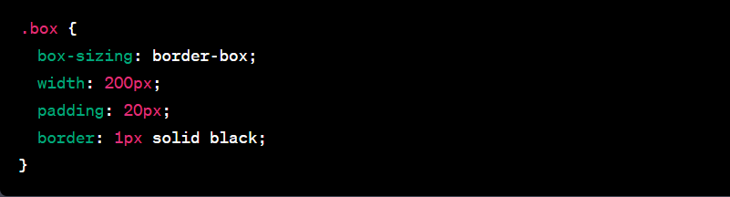

In CSS, the border-box is a value for the box-sizing property that affects how the width and height of an element are calculated. By default, when you set the width and height of an element in CSS, those values do not include the padding and border of the element. This means that the final dimensions of the element will be larger than the specified width and height, as the padding and border will be added to the total size. However, when you use the box-sizing: border-box property, the width and height of the element will include the padding and border. This means that the specified width and height will be the actual dimensions of the element, and the padding and border will be contained within that space.
Here's an example of how to use border-box in CSS: In this example, the total width of the .box element, including the padding and border, will be 200 pixels. The content area of the element will be 160 pixels (200px - 2 * 20px for the padding - 2px for the border), and the remaining space will be occupied by the padding and border. Using border-box can be helpful when you want to ensure that the specified dimensions of an element are maintained, regardless of the padding or border applied to it.